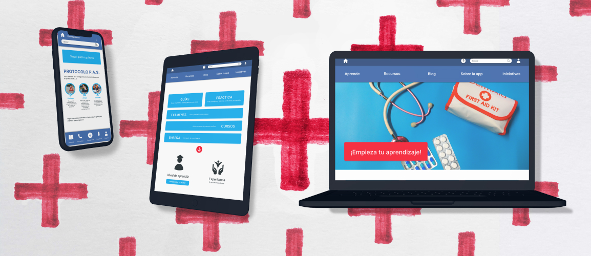

Aprende Primeros Auxilios
Aprende Primeros Auxilios is an app and a website created with a progresive enhancement approach dedicated to assist people in first aid emergencies and help them to learn first aid.
Challenge
Many people is present when an urgency happens in the street or while working. It was identified a lack of first aid knowledge and emergency assistance. For those who knew first aid, there was identified a lack of something that let them be up to date and centralize first aid information.
Solution
Design a mobile app that let people learn first aid and guide them while assisting an emergency. And a website app for first aid learning.
My role
UX designer leading the app and responsive designs from conception to delivery.
Date
August 2023 to September 2023.
Process summary

Empathizing
Personas
Adrian

I have first-aid knowledge and I do all that I can in a first-aid situation, but it is difficult to keep up to date.
Goals
- Having a more advanced first-aid level, going beyond the basics.
- Learn new things and update himself.
Frustrations
- Technics advance and change fast, it is difficult to keep up to date.
- Not centralized first aid knowledge.
- Not having a guide in first aid situations.
Data
- Age: 23/35
- Education: bachelor degree
- Hometown: Alicante, Spain
- Occupation: military/technical lead
Bio
Adrian is a military or a technical lead that have first-aid knowledge but have difficulties to keep up to date. He would use a mobile app to have a guide in those situations and to learn more about first-aid (in mobile, tablet or website). He would like to have something to set the appropiate pace in CPR and monitor the patient.
Diana
I have little first-aid knowledge, but it is important and I would like to have an app to learn about this topic.
Goals
- Having something to facilitate calling someone with knowledge quick in first-aid situations.
- Having an app to be instructed in first-aid.
Frustrations
- Doesn't have enough knowledge to feel sure when helping.
Data
- Age: 21/48
- Education: university degree
- Hometown: Alicante, Spain
- Occupation: student/administrative
Bio
Diana is a student or an administrative that considers important first-aid, but she has little knowledge about it. She doesn't feel secure when helping in those situations because she needs to have more knowledge. She would use a web app to be instructed and she feels more secure calling someone with high first-aid knowledge to help her in emergency situations.
Process
First paper wireframes, digital wireframes and a low fidelity mobile prototype were made. The low fidelity mobile prototype was tested on a usability study and then updated with the feedback received. Digital wireframes and low fidelity prototypes were created for tablet and mobile devices. Finally, mockups and high fidelity prototypes were created.
Mobile low fidelity prototype
Before usability study
Usability study parameters
Study type
Moderated usabilty study
The study is accessible for screen-readers.
Location
Alicante, Spain
Participants
5 participants. 3 men, 2 women between the ages of 21 to 52.
Participants are divided into 2 categories: 3 have first aid experience and 2 don’t know much about it but consider important learning first aid.
Length
20 - 40 minutes
Key insights
Simplicity
Users needed more simplicity in the app, they need to be capable to find what they search quick. Some section could be combined to simplify the app structure.
Buttons size
Due to the app nature, buttons need to be big and the app design very simple to be used quick and in a stressful situation if an emergency happens.
Guides & Practice
Guides and practice sections are very similar and need to be distinguished.
To adapt the mobile design to website and tablet screens, the information architecture is created to organize the new screens pages.
Low fidelity prototypes screen size variations
Tablet
Website
High fidelity prototypes
Mobile prototype
The mobile app is focused on guiding users in emergency situations.
Website prototype
The website and the tablet apps are focused on learning first aid.
Impact
Users shared that the app made easier and more accessible to learn first aid. Experienced users shared that the app would be interesting to centralize first aid technics updates and be up to date.